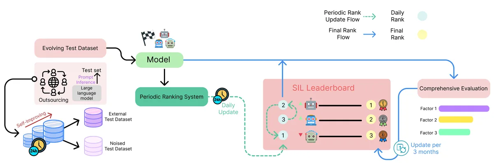

Under review · EMNLP 2026 Industry
From Snapshot to Stream: A Self-Improving Leaderboard for Robust and Evolving NLP Evaluation

Abstract
As natural language processing (NLP) systems are increasingly deployed in real-world environments, concerns have emerged regarding the relevance and reliability of traditional leaderboard-based evaluations. Existing leaderboards typically rely on static test sets and single-point evaluations, offering limited insight into a model's robustness, adaptability, and long-term utility. In this paper, we challenge the prevailing paradigm of benchmark-centric evaluation by identifying three structural limitations: (i) reliance on a fixed test distribution, (ii) misalignment between evaluation settings and real-world data dynamics, and (iii) overfitting incentives induced by leaderboard competition. To address these issues, we propose the Self-Improving Leaderboard (SIL), a conceptual framework that redefines model evaluation as a temporally evolving process. Rather than treating evaluation as a one-time snapshot, SIL maintains a dynamic test set that changes over time and supports longitudinal assessment of model performance. Our goal is not merely to introduce a new system, but to initiate a broader discussion about how the research community should rethink the design and purpose of leaderboard infrastructure. We argue that incorporating temporal variation, noise robustness, and distributional shift into evaluation is essential for aligning research progress with real-world demands.
At a Glance
- Background
- Static test-set leaderboards fail to reflect rapidly changing models and data distributions, and they incentivize test-set overfitting
- Problem
- Build a fair, sustainable comparison framework with time-aware ranking and regression detection
- Method
-
- Agent system collects daily news → LLM agents generate and review Q&A items → multi-LLM automated evaluation (vLLM backend) → time-aware ranking with stability and volatility metrics
- Live leaderboard operated on Hugging Face Spaces
- Results
-
- Stabilized real-time benchmark operations
- Time-aware ranking with stability/volatility metrics and quarterly regression detection
- Automation reduced operational cost and risk
- Role
-
- Agentic engineering lead: built the news-crawling agents (sources, scheduling, deduplication)
- Designed the LLM agent pipeline converting daily news into reviewed Q&A benchmark items
- Implemented the vLLM-based automated evaluation pipeline and time-aware ranking
- Operated the live leaderboard on HF Spaces with monitoring and data hygiene